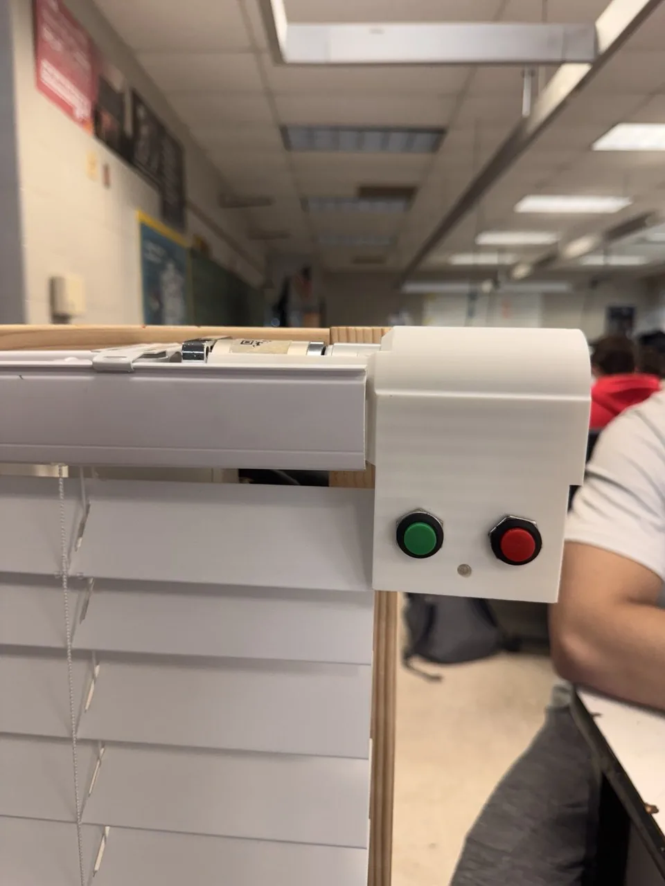
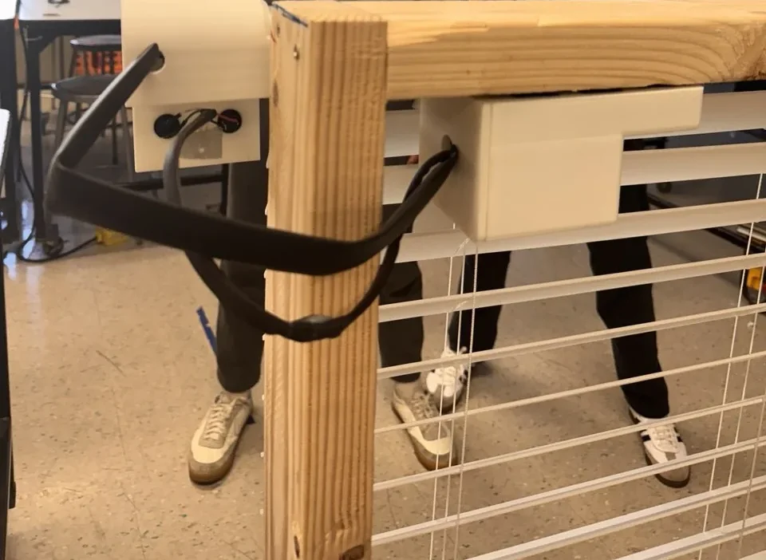

Senior year
2024–25
A window blind that automatically opens in the morning
Press the green button before bed. Eight hours later the slats open, and daylight gently wakes you up.
- A 12 V motor drives a planetary gearbox that sits in the end of the head rail and turns the tilt mechanism directly.
- An Arduino Uno with an Adafruit Motor Shield runs the timer and controls the motor.
- The Arduino sets the slat angle accurately by reading the motor's encoder.
- The green button starts the timer, the LED confirms it has started, and the red button closes the blind.
- Senior design
project - Catonsville
High School
Taken apart
Parts
- 1Head rail and slats
- 2Shaft adapterSlides over the large hex shaft on the gearbox. The blind's smaller hex rod slides into the other end, which couples the two.
- 3Planetary gearbox and 12 V DC motor
- 4Motor housing and control panel
- 5Buttons and LEDWired to the control box.
- 6Arduino Uno and Motor ShieldThe shield plugs directly into the top of the Uno.
- 712 V battery packPlugs into the motor shield.
- 8Electronics enclosure3D printed, with an end cap. Tucked up under the top of the window opening, behind the blind.
- 9Window frame


